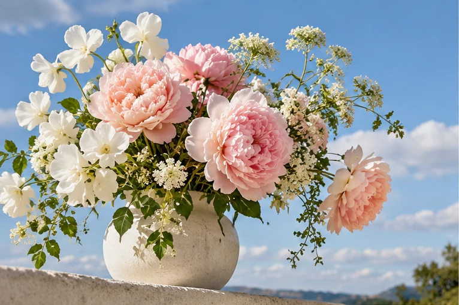
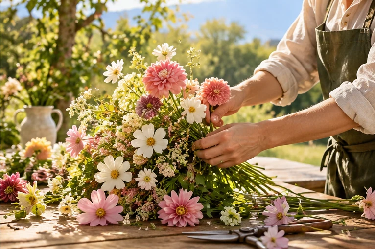
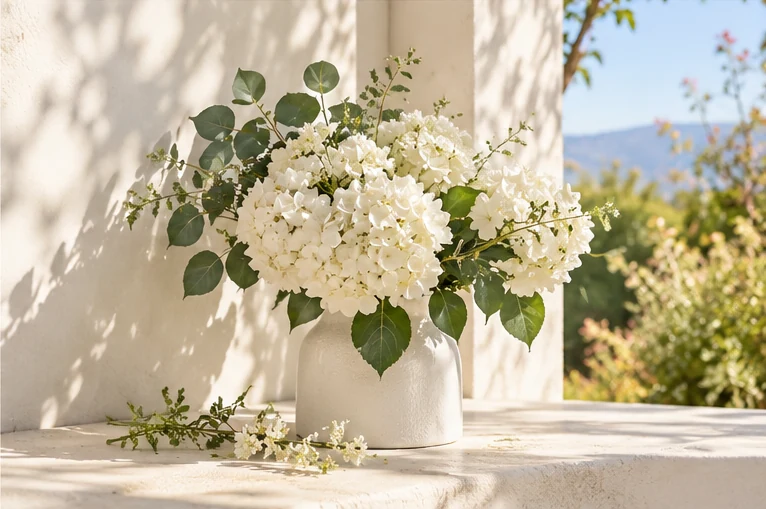

01Univers 01 / Inspirer
Le pouvoir des fleurs.
Une couleur qui surprend, une saison qui change, un bouquet qui raconte une émotion. La fleur ouvre toutes les possibilités créatives.
Explorer les inspirationsRechercher & explorer
Recherchez une rubrique, un thème ou un article de la maquette.
Aucun résultat dans la maquette. Essayez « fleurs », « presse », « talent » ou « international ».
Recherche locale dans cette proposition de site. Le contenu intégral de Floreview nécessite une connexion au CMS officiel.
Trois grandes histoires pour voyager de l’inspiration au geste, puis au partage. Une expérience visuelle créée pour cette proposition de refonte.

01Une couleur qui surprend, une saison qui change, un bouquet qui raconte une émotion. La fleur ouvre toutes les possibilités créatives.
Explorer les inspirations
02Derrière chaque composition, des gestes précis, des choix de matières et un savoir-faire qui se transmet et se réinvente.
Rencontrer les savoir-faire
03Le floral est aussi une communauté : des rencontres, des échanges, de nouvelles voix et l’envie de progresser ensemble.
Découvrir notre mission